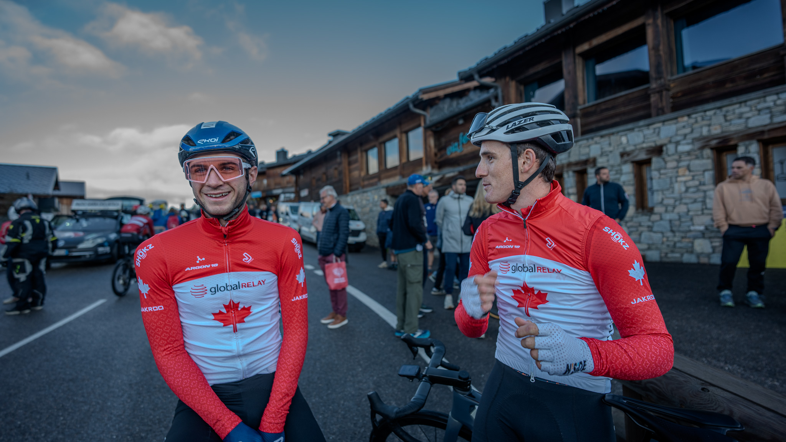
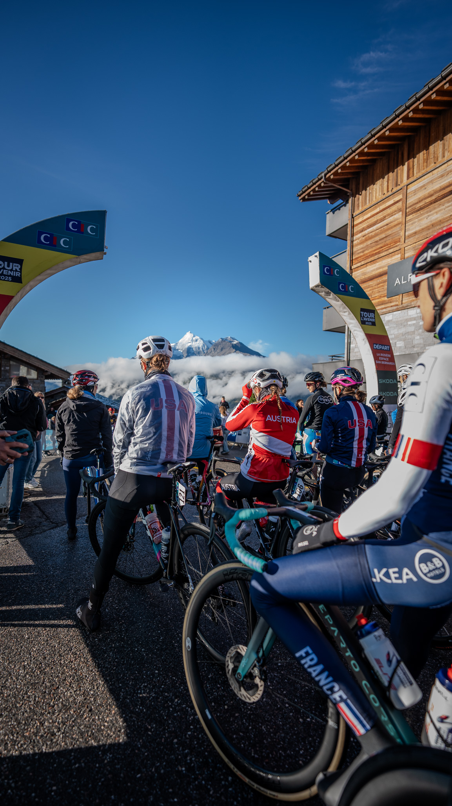
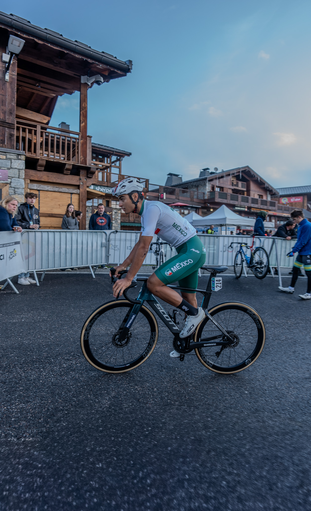
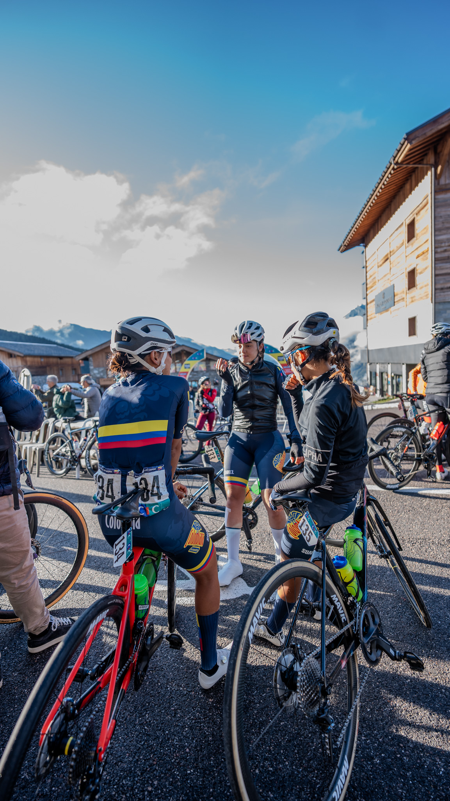

← Retour aux projets


Tour de l'Avenir 2025
Couverture complète de la plus grande course cycliste espoirs au monde.
Immersion au cœur du peloton pour capturer l'intensité, l'effort et les émotions des futurs champions du cyclisme mondial. Un reportage photo et vidéo au plus près de l'action.
📸 Galerie Photo




🏷️ Tags
Cyclisme
Reportage
Action
Événementiel